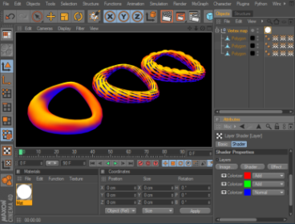

Rhino Import/Export
Version 1.1 für CINEMA 4D R12rhino.io ist ein Plugin für den Import und Export von Rhino Szenen unter Verwendung des OpenNURBS Toolkits. Es setzt mindestens eine R12 Version von CINEMA 4D voraus und unterstützt Rhino Dateien bis Version 5. Dateien, die über rhino.io exportiert werden, werden als Rhino 4 Dateien gespeichert, damit sie sowohl unter Version 4 als auch unter Version 5 geöffnet werden können. Aktuelle Informationen zum Plugin gibt es auf der offiziellen Support-Seite.
Installation
Die aktuelle Version von rhino.io für CINEMA 4D kann stets auf der Support-Seite heruntergeladen werden. Die Zip-Datei beinhaltet sowohl die Windows Version als auch die Universal Binaries für Mac OS X.
Entpacken Sie die Zip-Datei nach dem herunterladen und kopieren Sie den "rhinoio" Ordner in das 'plugins' Verzeichnis in Ihrem Installationsverzeichnis von CINEMA 4D. Die folgenden Screenshots stellen jeweils die korrekten Pfade unter Windows und Mac OS X dar.

{kind=link}
Erhalten einer Lizenz
Nachdem Sie rhino.io installiert haben, benötigen Sie eine Lizenz. Diese wird anhand der Seriennummer, die Sie beim Erwerb erhalten haben, und Ihrer Seriennummer von CINEMA 4D, unter der Sie das Plugin nutzen wollen, generiert. Verwenden Sie nicht die temporäre CINEMA 4D Seriennummer, die Sie beim Kauf erhalten haben, sondern die finale Nummer, die Ihnen nach der Registrierung bei MAXON zugeteilt wurde.
Die einfachste Möglichkeit eine Lizenz zu erhalten besteht darin, CINEMA 4D mit dem installierten Plugin zu starten. Dabei sollte eine Meldung erscheinen, dass keine rhino.io Lizenz gefunden werden konnte, und sich ein Fenster für die Registrierung öffnen. Überspringen Sie dieses indem sie auf "Abbrechen" drücken und CINEMA 4D sollte gestartet werden. Wählen Sie dann unter Plugins in der Menüleiste den Eintrag rhino.io registrieren. Daraufhin sollte erneut die Registrierungs-Seite erscheinen. Die meisten Felder sollten nun bereits mit den Information aus der CINEMA 4D Registrierung ausgefüllt sein. Vervollständigen Sie das Formular und drücken Sie auf "Senden". Anschließend sollte die Lizenz umgehend, an die von Ihnen angegebene E-Mail Adresse, gesendet werden.
Alternativ können Sie direkt die Registrierungs-Seite besuchen: www.rhino.io/register/. Sollten Komplikationen bei der Anforderung einer Lizenz auftreten besuchen Sie die Support-Seite oder mailen Sie an info@rhino.io.
Rhino Import
Allgemeiner Ablauf
Der Rhino Importer lädt Rhino Polygonnetze so wie sie sind, kann aber selbst keine NURBS Objekte in Polygonnetze umwandeln. Allerdings kann Rhino Rendernetze gemeinsam mit den NURBS Objekten in einer 3dm Datei speichern, welche dann für den Import verwendet werden können. Diese wird in Rhino automatisch erzeugt wenn das Objekt mindestens einmal gerendert oder im schattierten Modus in den Viewport gezeichnet wurde. Vergewissern Sie sich zudem beim Speichern der Datei in Rhino, dass die Option Kompakt speichern deaktiviert ist. Möglicherweise speichern einige andere Anwendungen, die das 3dm Dateiformat verwenden, Rendernetze nicht automatisch mit. In diesem Fall müssen sie die Objekte explizit tesselieren oder den Umweg über Rhino gehen. Sollten NURBS/Brep Objekte ohne Rendernetze in der zu importierenden Datei gefunden werden, wird eine Warnungsmeldung ausgegeben.
Für einen korrekten Import, können NURBS Objekte vor dem Speichern in Rhino manuell in Polygonnetze umgewandelt werden. Es genügt jedoch die richtigen Einstellungen für das Rendernetz zu setzen. Diese Einstellung kann entweder global(Qualität des Rendernetzes in den Rhino-Optionen) oder für ein einzelnes Objekt (Konfiguration des Rendernetzes in den Objekteigenschaften) vorgenommen werden.
Das konkrete Verhalten des Rhino Importers hängt von den Optionen des Importers ab, die jedesmal beim Import erscheinen oder unter Bearbeiten -> Programm-Voreinstellungen -> Import/Export -> Rhino (*.3dm) Import zu finden sind.
Import Optionen
Dokument Skalierung bestimmt wie das Rhino Model beim Importieren skaliert werden soll. In jedem Fall wird die Geometrie so wie sie ist aus der Rhino Datei gelesen und die Einheit des Cinema4D Dokuments entsprechend gesetzt. Standardmäßig ist der Wert auf Aus Rhino Datei gesetzt, wobei nur der Wert des CINEMA 4D Dokuments auf den Wert aus der Rhino Datei gesetzt wird. Bei Benutzerdefiniert wird die Maßeinheit im CINEMA 4D Dokument auf die angegebene Einheit in der Zeile darunter gesetzt. Beachten Sie, dass bei Hinzuladen einer Rhino Datei in ein Dokument, die Objekte ausgehend von der Maßeinheit in der Datei skaliert werden oder Sie geben die Einheit des bestehenden Dokuments an..
Ebenen Importieren bestimmt auf welche Weise Rhino Ebenen importiert werden sollen. Standardmäßig ist die Option Als Ebenen aktiv, wodurch Rhino Ebenen direkt in CINEMA 4D Ebenen konvertiert werden. Manchmal könnte es geeigneter sein die Ebenen als Null-Objekte zu importieren und die zu der Ebene (und Unterebenen) gehörenden Objekte unter diesen zu gruppieren. Dies wird durch den Eintrag Als Gruppen ermöglicht. Ebenen, denen keine Objekte zugewiesen sind werden nicht berücksichtigt. Um alle Ebenen zu ignorieren, kann diese Option auf Aus gesetzt werden.
Materialien Erzeugen bewirkt die Erzeugung von Materialien in CINEMA 4D. Dabei können entweder Rhino Materialien direkt konvertiert werden (Von Rhino Materialien) oder es werden Materialien anhand der Ebenenfarben generiert(Von Ebenenfarben). Wenn Sie keine Erzeugung von Materialien wünschen, setzen Sie diese Option auf Aus.
Materialien aufräumen entfernt ungenutzte oder doppelte Materialien aus der Rhino-Szene. Ungenutzte Materialen können durch Objekte verursacht werden, die der Rhino Importer nicht unterstützt. Doppelte Materialien können häufig auftreten, wenn mehrere Objekte Materialien mit identischen Eigenschaften besitzen.
Polygonnetze importieren spezifiziert, ob Polygonnetze aus Rhino importiert werden sollen. Ist diese Option deaktiviert, werden Polygonnetze beim Import ignoriert.
Rendernetze importieren ist höchstwahrscheinlich die Funktion, mit der mit der Sie die meisten Ihrer Daten importieren werden. Ist diese Einstellung aktiv, werden Rendernetze, die auch bei NURBS-Objekten mitgespeichert werden, importiert.
Gruppen importieren ermöglicht, dass Rhino Gruppen als Selektion-Objekte in CINEMA 4D importiert werden.
Kameras importieren kontroliert, ob benannte Ansichten aus Rhino als Kamera importiert werden sollen.
Lichter importieren bestimmt, ob Lichter aus Rhino importiert werden sollen. Beachten Sie, dass die Position und Orientierung von Lichtern, die in Rhino im Kamerakoordinatensystem definiert wurden, möglicherweise nicht exakt übereinstimmen!
Unsichtbare Objekte überspringen führt bei Aktivierung dazu, dass der Importer alle Objekte, die nicht sichtbar, ignoriert. Ist diese Option nicht gewählt werden auch unsichtbare Rhino Objekte in CINEMA 4D importiert und ihre Sichtbarkeit deaktiviert.
Kurven importieren legt fest, ob NURBS-Kurven und Polylinien aus der Rhino-Datei als Splines importiert werden sollen. Während Polylinien präzise konvertiert werden können, werden NURBS-Kurven automatisch in Abhängigkeit von der Zahl der Zwischenpunkte tesseliert.
Objekte bestehen in Rhino gewöhnlich aus separaten NURBS-Flächen, diese sind oft über Flächengrenzen oder Trimmkurven verbunden. Die NURBS-Flächen werden unabhängig voneinander tesseliert, wodurch doppelte Punkte an Flächen- oder Trimmgrenzen auftreten können. Wenn in CINEMA 4D mit diesen Objekten gerarbeitet wird, zieht dies eine Verschwendung von Ressourcen mit sich und kann beim Editieren des Modells oder beim Zuweisen von Texturkoordinaten störend wirken. Um doppelte Punkte zu vermeiden kann der Befehl Optimieren nach dem Import aufgerufen werden. Ist die Option Punkte zusammenfassen aktiviert, geschieht dies bereits beim Importieren. Ist die zugehörige Checkbox ausgewählt, werden je zwei Punkte, deren Abstand unterhalb der Toleranz liegt, zusammengefasst.
Objekte besitzen in Rhino keine individuellen Koordinatenachsen, daher befinden sich die Achsen eines importierten Objekts normalerweise im Ursprung. Wird die Option Objektachsen zentrieren aktiviert, wird die Achse jedes Objekts in das Zentrum seiner Punkte bewegt.
Hinzuladen
Wird eine Rhino-Datei durch Hinzuladen geöffnet, prüft der Importer, ob das selbe Modell bereits in der aktuellen CINEMA 4D Szene existiert. Ist dies der Fall, erscheint ein Dialog mit der Frage, ob die Szene aktualisiert werden soll. Wenn dies gewünscht ist, werden Änderungen an Objekten an die existierenden Objekte in CINEMA 4D übertragen. Alle anderen Änderungen (z.B. an Materialien, Ebenenzuordnungen oder Umgruppierungen von Objekten im Objekt-Manager) bleiben erhalten.
Rhino legt für alle Objekte und Ebenen Identifikatoren (IDs) an. Diese können sie in Rhino unter dem Abschnitt Details in den Objekteigenschaften einsehen. Beim Import werden IDs mit den Objekten und Ebenen (bzw. Gruppen) in CINEMA 4D gespeichert. Wird die Szene aktiviert überprüft der Importer, ob irgendwelche Objekte in der hinzugeladenen Rhino-Datei bereits in der CINEMA 4D Szene existieren und aktualisiert die Geometrie. Dabei müssen einige Dinge beachtet werden:
- Falls ein Objekt in CINEMA 4D entfernt wurde, aber noch in der Rhino Szene existiert, wird es erneut importiert. Ist dies nicht gewünscht, können sie beispielsweise die Sichtbarkeit der Objekte abschalten und die Funktion Unsichtbare Objekte überspringen in den Optionen aktivieren.
- Einige Opertionen in Rhino (z.B. Verbinden, Zerlegen, Extrahieren) können die ID eines Objekts verändern. In diesem Fall kann der Importer keinen Bezug herstellen und importiert das Objekt daher erneut.
- Wird ein Objekt importiert, das zuvor nicht existierte, versucht der Importer es in die selbe Ebene oder Gruppe einzufügen, sofern diese bereits existieren. Neue Ebenen werden nicht hinzugefügt.
- Einige Importeinstellungen sollten beim Aktualisieren einer Szene besonders beachtet werden. Falls beispielsweise in der ursprünglichen Szene Ebenen als Gruppen importiert wurden und beim Hinzuladen einer weiteren Szene Ebenen tatsächlich als Ebenen übernommen werden sollen, so werden die Objekte nicht in die existierenden Gruppen eingefügt. Dies liegt daran, dass der Importer diesmal nach bereits vorhanden Ebenen sucht, diese jedoch nicht existieren, da sie zuvor als Gruppen importiert wurden.
Vertex Farben

Falls Vertex Farben in dem zu importierenden Polygonnetz vorhanden sind, werden diese von rhino.io importiert, indem für jeden Farbkanal Vertex-Maps angelegt werden. Die Tags werden entsprechend der Farbe benannt, die sie repräsentieren.
Die Beispieldatei vertex_color_shader.c4d im Ordner examples demonstriert eine mögliche Anwendung. In dieser Szene existiert ein Material, das einen Ebenen-Shader verwendet, um die drei Farben miteinander zu kombinieren. Jede dieser Ebenen besteht aus einem Colorizer-Shader, der die Werte der zugehörigen Vertex-Map auf die entsprechende Farbe abbildet.
Rhino Export
Allgemeiner Ablauf
Es wird stets eine Ebene mit der Bezeichnung "Standard" erzeugt. Alle Objekte in der CINEMA 4D Szene, die keiner Ebene zugeordnet sind, werden beim Export dieser Ebene zugeordnet.
Der Exporter nutzt die Sichtbarkeit von Ebenen im Editor, um die Sichtbarkeit von Ebenen in Rhino festzulegen, d.h. die Sichtbarkeit beim Rendern wird nicht berücksichtigt.
Für fortgeschrittene Benutzer: Beachten Sie, dass beim Exportieren von Polygonnetzen die Reihenfolge der Punkte nicht beibehalten wird. Rhino kann keine unterbrochenen Texturkoordinaten oder Normalen darstellen, daher wird das Netz so verarbeitet, dass Punkte in diesen Fällen aufgetrennt werden können. Dies hat den Nachteil, dass sich die Anzahl und die Reihenfolge der Punkte in den meisten Fällen unterscheiden wird.
Die Einheit des Dokuments wird ebenfalls in der Rhino Datei gespeichert.
Das konkrete Verhalten des Rhino Importers kann über diverse Einstellungen verändert werden. Diese Einstellungen erscheinen sobald eine Szene exportiert wird und sind jederzeit unter Bearbeiten -> Programm-Voreinstellungen -> Import/Export -> Rhino (*.3dm) Export zu finden.
Export Options
Splines Exportieren bestimmt, ob Splines in der Szene als Polylinien exportiert oder ignoirert werden sollen.
Impressum
Die rhino.io Import/Export Tools wurden in enger Zusammenarbeit mit der LAUBLab KG und Timm Dapper entwickelt. Copyright (C) 2009-2011 Timm Dapper
Rhino und OpenNURBS sind eingetragene Warenzeichen von Robert McNeel & Associates. Copyright (C) 1993-2007 Robert McNeel & Associates. Alle Rechte vorbehalten.
MAXON und CINEMA 4D sind eingetragene Warenzeichen der MAXON Computer GmbH.